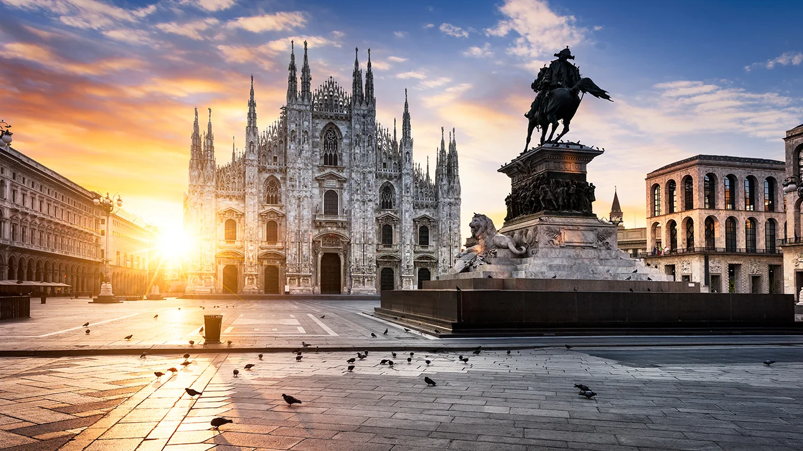
5 pratos típicos de Milão!
1. Risotto alla Milanese
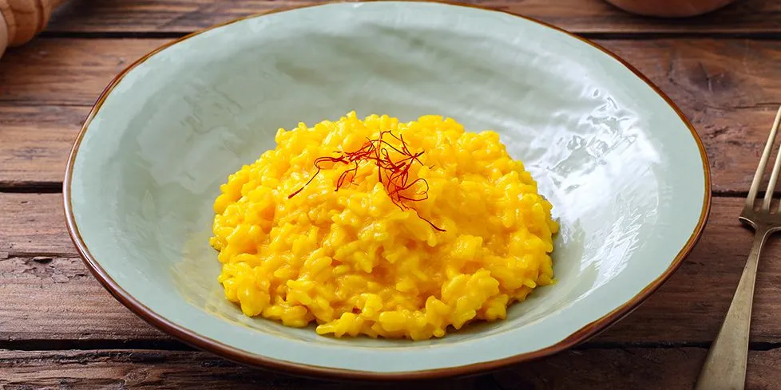
O mais clássico dos pratos e nosso preferido de Milão. Esqueça o risoto que fazemos no
Brasil, o milanês trata-se de um risoto feito com açafrão, manteiga, cebola, arroz, vinho branco, caldo de
carne e muito, muito queijo (queijo nunca é demais né). O risotto alla milanese nasce em 1574, quando o
vidraceiro belga Valerio di Fiandra, que na época morava em Milão, trabalhava nos vitrais do Duomo, e
decide, para o casamento de sua filha, fazer um risoto com manteiga de açafrão. Essa especiaria era muito
usada pelos vidraceiros para dar a coloração amarela aos vidros, lembrando o ouro, sinômino de riqueza, bem
a cara de Milão. Em praticamente todos os restaurantes e casas na cidade é fácil encontrar um ótimo e
cremoso risotto, é um dos maiores pratos típicos de Milão. Aqui em casa, no frio, fazemos toda semana. Você
deve experimentar!
2. Ossobuco
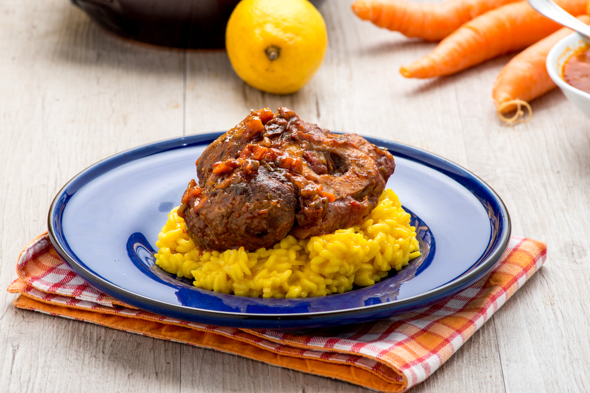
Junto com o risotto, você também pode comer o mítico ossobuco, o saboroso pedaço que vem da
panturrilha da vitela, carne super macia. São fatias de 3 a 4 cm ainda com o osso, e isso é fundamental pois
no cozimento o miolo desse osso se junta ao molho contribuindo para o sabor final. É servido
tradicionalmente em cima do risoto e aquele molho da carne caindo em cima do risotto é de agradecer por
Milão existir.
3. Mondeghili
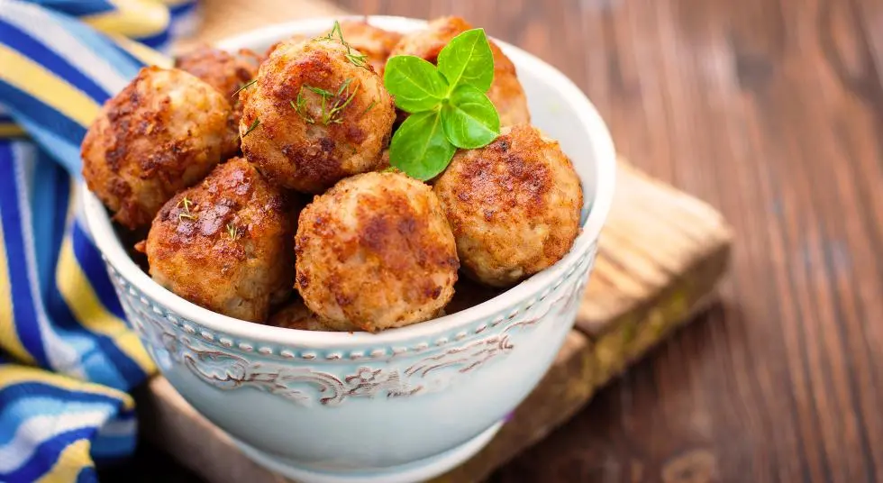
Almôndegas típicas milanesas criadas para não desperdiçar as sobras de carnes cozidas e
assadas de outras receitas e também é um dos maiores pratos típicos de Milão. Elas são preparados com um mix
de carne de vitela e vaca assadas juntamente com mortadela, salsicha, pão, ovos e especiarias e depois
fritos na manteiga (esqueça um dia a dieta, vale a pena). Sua origem é espanhola: “albondiga” e os milaneses
a chamavam de albondeghito (diminutivo) e disso foi um pulo para se chamar mondeghili. Essas bolinhas de
carne são maravilhosas em qualquer época do ano.
4. Cotoletta alla Milanese
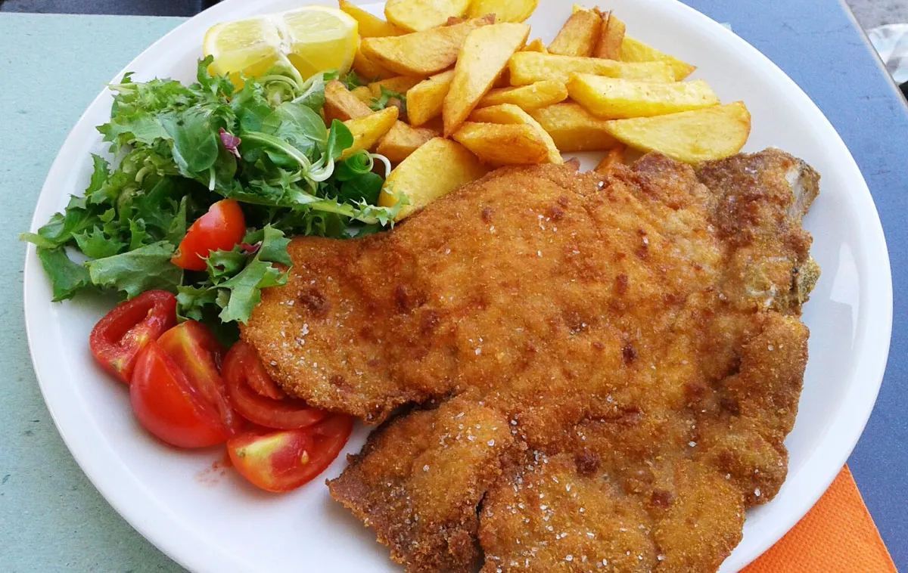
Este prato é muito simples e saboroso especialmente se acompanhado de tomates cereja,
rúcula ou batatas fritas. Sua origem é de 1134 quando foi servida ao Abade da Basílica de Santo Ambrósio de
Milão, e é um super clássico da tradição milanesa. Feita também com carne de vitela (em Milão usa-se muito
essa carne), empanada e frita na manteiga. Originalmente um pouco dessa manteiga era jogada em cima da
cotoletta pronta, hoje essa técnica foi substituída por fatias de limão no momento de servir. Costumam vir
em tamanhos exagerados, muitas vezes maior que um prato mas dá pra comer tranquilamente pois é deliciosa.
5. Barbajada
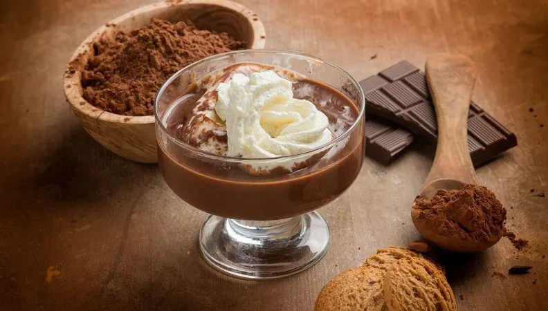
Doce/bebida típica de Milão, ótima em qualquer momento do dia é uma mistura de chocolate,
café e leite (não confundir com cappuccino) e sua receita tem mais de 200 anos. Hoje em dia não tão famosa,
é preciso ir a algum local mais tradicional para beber. Ou, assim como nós, fazer em casa. É sensacional em
qualquer época do ano já que existe na versão quente ou fria.
Pontos turísticos de Milão!
1. Catedral de Milão
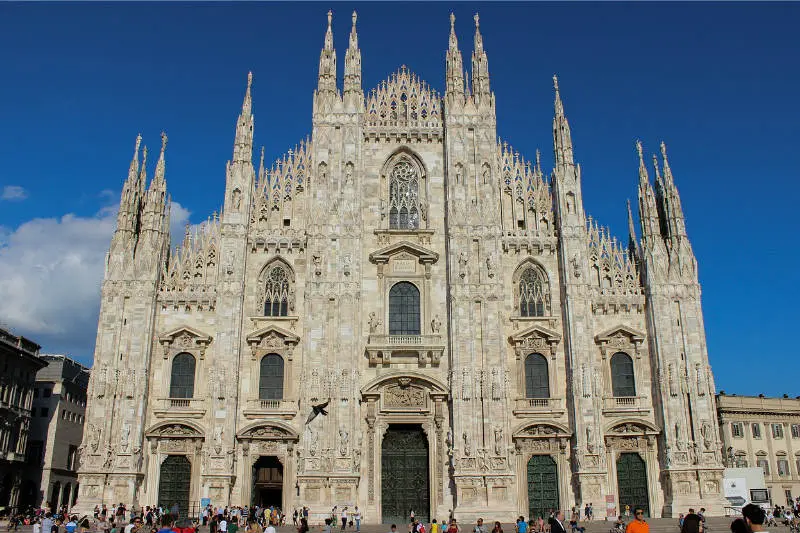
A Catedral de Milão, ou Duomo em italiano, está localizada na Piazza Del Duomo, na
Itália. A arquitetura monumental da igreja chama a atenção pelo seu exterior e ela é um dos pontos
turísticos de Milão.
Colunas, torres e esculturas, feitas inteiramente em mármore, dão o tom da grandiosidade da obra.
Não se engane em pensar que apenas o exterior é rico. Ao entrar na igreja, já se vê o quão impactante será a
visitação. Os ícones dentro da Catedral são impressionantes.
2. Piazza Del Duomo
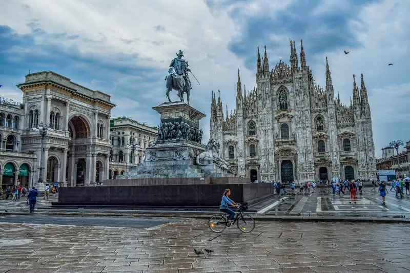
Centro do turismo em Milão, a praça recebe os principais eventos da cidade. Nela está o
Monumento Equestre Vittorio Emanuele II, uma homenagem ao rei responsável pela unificação da Itália. Bares,
restaurantes, cafés e lojas, situadas ao redor da praça, dão um charme a atração.
Nada é capaz de estragar esse belo passeio, mas tenha cuidado com pessoas que querem, a qualquer custo, te
dar algo. Pode ser um golpe que te fará pagar bem caro por algum produto que você nunca quis.
3. Galeria Vittorio Emanuele II
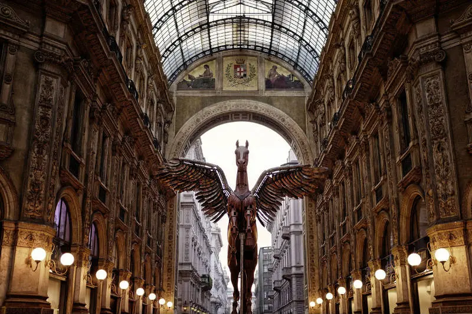
Uma das melhores coisas de Milão é poder visitar as principais atrações facilmente. A
galeria é formada por um cruzamento de duas ruas e coberta por uma cúpula, conectando a Piazza Del Duomo a
Piazza della Scalla.
Lá, encontram-se lojas de grife, como a Louis Vuitton, Prada, Gucci, além de tradicionais e elegantes
restaurantes milaneses.
4. Teatro alla Scalla
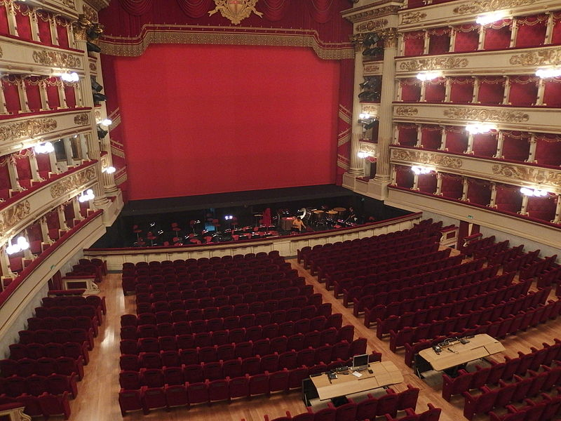
Considerado o maior teatro de música lírica do mundo, o Teatro alla Scalla recebe
grandes talentos da ópera italiana em temporada de espetáculos. Os preços dos ingressos variam e é preciso
adquirir antecipadamente pelo site, se quiser ver os talentosos tenores.
Também é possível apenas visitar o teatro, quando não estão acontecendo os shows e ensaios. Para isso basta
comprar o ingresso para o Museu Scalla, que permite, também, ver a sala de apresentações.
A fachada do prédio engana pela sua simplicidade, mas seu interior mostra o porquê do teatro ser tão
respeitado no âmbito da arte.
Horário: 9h às 12h30 – 13h30 às 17h30
Endereço: Largo Ghiringhelli, 1, Piazza della Scalla
5. Arco da Paz
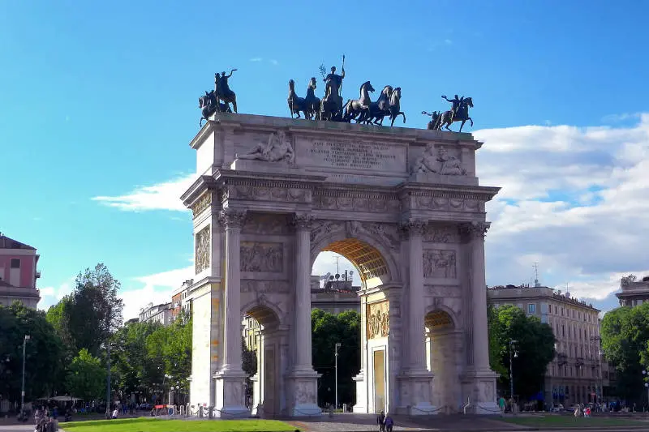
No centro do Parque Sempione se localiza o clássico monumento de Milão.
O Arco da Paz, que indicava a entrada da cidade, foi encomendado por Napoleão Bonaparte, durante seu domínio
no território. O arco foi dedicado à paz européia, logo após a queda do líder francês.
O monumento, esculpido em granito, possui três arcadas, quatro colunas e algumas esculturas, símbolos de paz
e união da região, chamada de Lombardia.
Escolha a melhor hospedagem para você e sua família!